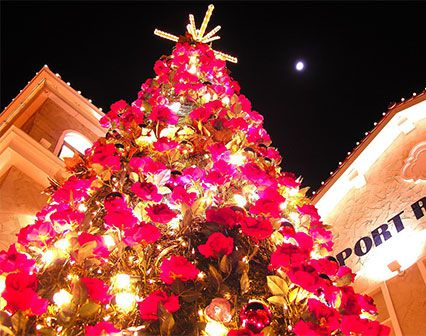

旅行游记
在这个浮躁的世界，我们需要退却所有的光环，在一点一滴的践行中发现最真实的自己..

到不同的地方走走，感受他们的地理环境、风土人情...
精彩旅程“圣诞到来”
旅行途中总有一些地方，从看到的那一眼，就早已进入心坎儿，这次遇到了圣诞节！
-
 圣诞节
圣诞节
-
圣诞节日装饰
-
 圣诞合家欢乐
圣诞合家欢乐

圣诞节
圣诞节(Christmas)本身是一个宗教节，用来庆祝耶稣的诞辰，因而又名耶诞节，位于每年12月25日，这是西方国家一年中最重要的节日。在圣诞节，大部分的天主教教堂都会先在12月24日的平安夜及12月25日凌晨举行子夜弥撒；而基督教的另一分支——东正教的圣诞节庆祝则在每年的1月7日。现如今，圣诞节已经成为欧美国家的公共假日，有点类似于中国的春节，是举家团圆的日子。而且近年来，该节日在亚洲国家也非常流行。
圣诞节的英语Christmas，即“基督弥撒”。有时又缩写为“Xmas”。“X”是希腊字母“Χ（Chi）”，是“基督”的希腊语Χριστός（Christos）中的首个字母。
圣诞节西班牙语称为Navidad，葡萄牙语称为Natal，波兰语称为Boże Narodzenie，法语称为Noël，意大利语称为Natale，加泰罗尼亚语称为Nadal，意思是“诞生”，更清晰地反映圣诞节的意思。与此相对，德语称为Weihnachten，意思为“神圣的夜晚”。
清朝末年的传教士称耶稣为西方圣人，在台湾民间，神明诞辰，皆可称圣诞，因此将此节日译为圣诞节，或耶稣节。1980年代，台湾新闻局长宋楚瑜，通令各新闻媒体，下令禁止说方言“台语、客语”，以及不得使用“圣诞”一辞，因此台湾民间将圣诞节更名为耶诞节，为耶稣诞生日之意。
在圣诞节或圣诞夜，人们经常会准备一盘丰盛的圣诞大餐来享用，一般都是所在国家里的传统菜色。很多地区，特别是东欧，家庭圣诞大餐前人们会禁食一阵。很多国家里，糖果和宴请也是圣诞庆祝的重要一部分。
- 
新西兰一站自然风光
新西兰属温带海洋性气候，季节与北半球相反。新西兰的12月至2月为夏天，6月至8月为冬天。
-
有长白云之乡美誉的新西兰属于大洋洲
-
有长白云之乡美誉的新西兰属于大洋洲
-
有长白云之乡美誉的新西兰属于大洋洲
-
有长白云之乡美誉的新西兰属于大洋洲
美丽宁静的海岛
街道建筑
荷兰风格包括殖民风格和殖民复兴风格。荷兰殖民建筑在纽约州和新泽西州首先兴起，它有两大明显的往特点：（A）双折线屋顶；（B）侧墙沿街面开数扇老虎窗。荷兰殖民、复兴风格根基于 1880 年复兴时期的诸建筑风格，吸取了辛格风格的建筑特征，显非对称式（L 形式），屋顶上有时开一个巨大的辛格窗。荷兰风格建筑布局合理，通风与采光性好。
在圣诞节或圣诞夜，人们经常会准备一盘丰盛的圣诞大餐来享用，一般都是所在国家里的传统菜色。很多地区，特别是东欧，家庭圣诞大餐前人们会禁食一阵。很多国家里，糖果和宴请也是圣诞庆祝的重要一部分。

风车
风车原为荷兰人首创，适应着风力利用和磨坊工业的需要。如今虽然仍为荷兰的“国家商标”，实际运用上却不多见了。我们当然无法带回荷兰的大风，但是小型的风车模型纪念品是可以的，权当是你来到荷兰的留念。
人们常把荷兰称为“风车之国”，荷兰是欧洲西部一个只有一千多万人口的国家。它的真正国名叫“尼德兰”。“尼德”是低的意思，“兰”是土地，合起来称为“低洼之国”。荷兰全国三分之一的面积只高出北海海面1米，近四分之一低于海平面，真是名符其实的“尼德兰”。
荷兰坐落在地球的盛行西风带，一年四季盛吹西风。同时它濒临大西洋，又是典型的海洋性气候国家，海陆风长年不息。这就给缺乏水力、动力资源的荷兰，提供了利用风力的优厚补偿。荷兰的风车，最早从德国引进。开始时，风车仅用于磨粉之类。到了十六、七世纪，风车对荷兰的经济有着特别重大的意义。有：造纸等作用，被誉为“风车之国”。荷兰向来以风车闻名。而保存风车较多的地方，则是“小孩堤坊”。
小时候，你读过这个故事吧？一个小男孩眼见堤坊上出现裂缝，海水渗入，他担心村子将被海水淹没，便用手指头塞住堤坊，救了全村人…
如今，在这个地方还保留了19部风车，并且还能见到穿着传统服饰的荷兰妇女。
直到8月26日为止，是今年荷兰的“风车之日”。每逢星期六，小孩堤坊的风车将一起转动，有的还开放内部，让游人参观。
当时，荷兰在世界的商业中，占首要地位的各种原料，从各路水道运往风车加工，其中包括：北欧各国和波罗的海沿岸各国的木材，德国的大麻子和亚麻子，印度和东南亚的肉桂和胡椒。在荷兰的大港——鹿特丹和阿姆斯特丹的近郊，有很多风车的磨坊、锯木厂和造纸厂。
随着荷兰人民围海造陆工程的大规模开展，风车在这项艰巨的工程中发挥了巨大的作用。根据当地的湿润多雨、风向多变的气候特点，他们对风车进行了改革。首先是给风车配上活动的顶篷。此外，为了能四面迎风，他们又把风车的顶篷安装在滚轮上。这种风车，被称为荷兰式风车。
开启你的全新旅程吧！
-
892754688
-
8927546813
-
西班牙
西班牙拥有十分优越的旅游资源，有“旅游王国”美誉。
-
西班牙首都马德里，是欧洲著名的历史名城，是全国的政治、文化、经济和金融中心。
-
巴塞罗那，位于西班牙东北部地中海沿岸，是加泰罗尼亚自治区首府。是西班牙第二大城市，也是世界上人口最稠密的城市之一。
-
新西兰历史沿革
公元十世纪，来自库克群岛和塔希蒂的波利尼西亚航海家乘坐独木舟来到新西兰。到公元十二世纪，全国受青睐的地区已分布了许多定居点；1350年起，毛利人在新西兰定居。
1642年，荷兰航海家阿贝尔·扬松·塔斯曼在一次远洋冒险中于1642年发现新西兰的西海岸区，但在企图登陆时遭到毛利人的攻击而迅速离去，但他以荷兰一个地区的名字命名这块土地为（NieuwZealand），他绘制了部分西海岸地区的地图，但并未在此登陆；1769年至1777年，英国库克船长先后5次到新西兰。
1769年，英国海军舰长詹姆斯·库克及其船员成为首先踏足新西兰土地的欧洲人，随后，捕捞海豹和鲸鱼的人们也来到这里，传教士也很快接踵而来，定居点开始逐渐建立起来了。后英国向新西兰大批移民并宣布占领。
1840年2月6日，英国迫使毛利人族长签订《威坦哲条约》，1856年，新西兰成为英国的自治殖民地，1907年成为自治区，到了1947年完全独立。 -
新西兰强调对外政策的根本目的是维护世界
特别是太平洋地区的和平，以外交保障新西兰主权与安全，维护经济利益。将同澳大利亚和太平洋岛国的关系作为对外政治、防务和经济关系的立足点；
将亚太地区作为对外关系优先领域；积极改善与美国关系，维护与欧洲国家传统关系，强调发展与拉美新兴国家政治、经济关系；积极支持和参与联合国的维和行动和人道主义援助，寻求在国际组织中发挥作用；重视参与地区经济合作，积极推动跨太平洋战略经济伙伴协定（TPP）谈判等贸易和投资自由化进程；强调军队的防御性和参与维和、人道主义援助等多重功能；
主张继续推动国际核裁军进程，最终全面销毁核武器；坚持南太平洋无核区，支持建立东南亚无核区；积极参与国际反恐合作，反对伊拉克战争，积极参与阿富汗、伊拉克战后重建；关注朝核问题，反对朝鲜发展核武器，希望朝核问题通过和平方式得以解决；关注西亚北非局势，谴责埃及、叙利亚等国的暴力事件。 -
2013年4月年度，出入境游客总人数为477.6万人次。
主要来源地为：澳大利亚117.2万，中国大陆21.7万，英国18.9万，美国18.8万，日本7.6万。 -
新西兰的艺术与文化得自于各个种族
产生了结合毛利人、欧洲毛利人、亚洲人和大洋洲人的特质。新西兰的艺术圈反映了这种融合。新西兰最有价值的绘画中，有些是由查尔斯·高第（CzarlesGoldie）于十九世纪所画的毛利人画像。
画家柯林·麦卡宏（KolinMcKahon）的作品使用了文字、基督教肖像与毛利语言以及神话，他被许多人认为是新西兰最伟大的艺术家。许多艺廊除了展出这些作品，还有其它艺术家的作品，如雷尔夫·哈特雷（LalphHotele）和葛雷姆·希尼（GlahameSydney）。
新西兰地区风光
新西兰，地球上的最后一片净土，心随心动，畅享无限可能！
-
新西兰毛利文化村
-
壮美的风光、热情的人民，使这里声名远扬，再加上一流的高尔夫球场、环环相扣的精彩注定让你的皇后镇之行充实而丰满。
-
全球最重要的跨国公司都在奥克兰设有办事处，奥克兰事实上也是新西兰的“经济首都”。
-
2015年2月7日
我的小站
巴塞罗那旅游简介
气候宜人、风光旖旎、 -
015年2月8日
我的小站
巴塞罗那娱乐
旅行酒吧是一个观光客和在巴塞罗那的外国侨民喜欢光顾的地方，这使得它成为城里最具国际化的酒吧。这里除了能喝咖啡之外还能参加由酒吧组织的各类活动，有体育的，有旅游的。在旅游方面它会组织徒步、骑自行车或溜滑板来参观城市。每个星期二都会有各种语言的交流，当然了，有时杯中的酒会比语言更有说服力，更能方便大家的聚会；而且这种聚会也总是以欢乐的舞蹈作为结束。在这里你还可以上网冲浪，但价格却不是城里最好的。如果你住巴塞罗那孤身一人的话，你就没有理由不去旅行酒吧凑热闹。
酒吧周末的时候，巴塞罗那的酒吧一直到凌晨2点都很热闹。 -
015年2月9日
我的小站
1月5日三王节，巴塞罗那有一个独特的传说
巴塞罗那属于加泰罗尼亚区，在西班牙，每个区都有自己独特的节日。1月5日三王节，巴塞罗那有一个独特的传说：三王在这里是从东方的海上而来，所以从市长、政府官员到孩子们，这一天都在码头边翘首盼望。2月1日-3月7日的狂欢节，除了欣赏传统的狂欢队伍之外，也可以到装饰得五彩缤纷的大市场去逛逛，那里的节日气氛令人陶醉。
4月23日的圣乔治节，是加泰罗尼亚最重要的节日，因为圣乔治是加泰罗尼亚的保护神。这一天恋人间互赠玫瑰花。
-
015年2月10日
我的小站
西元前6世纪左右，腓尼基人是巴塞罗那的始建者。
至西元前3世纪时，迦太基人(Carthaginians)来到此地，并以他们的领导者Hamilcar Barca 的家族姓氏为这片土地和城市命名，称此地为Barcino、城市为Barca，这就是今天巴塞罗那一名的由来。
这个欧洲南部的北方城市，虽然是工业的、进步的、中产阶级的乃至欧洲的，却也同时兼具了传统的、普遍的、地中海的及气候温和的特质，这种介于传统及先进的矛盾，是巴塞罗那及其二百万人最大的特色。
西元前201年，罗马人在此建立了促成此地大步发展的港口。罗马人势力消退後，整个欧洲陷入蛮族统治的混乱状态，巴塞罗那亦不例外；8世纪时，来自非洲的摩尔人成为此地的统治者，直到12世纪，摩尔人把巴塞罗那营建成地中海地区最大的港口之一。
巴塞罗那真正开始活跃，是在西元9世纪查尔曼国王的时代。这一时期的加泰罗尼亚自治区已脱离了伊比利亚人长期统治的史前时代。在伊比利亚人统治以前，这一区曾是腓尼基人与希腊人的殖民地。罗马人也曾占领过这里，之后哥德人及阿拉伯人的相继入侵使得法兰克人不得不设立边界防御区，一个新兴的国家也因此在庇里牛斯山东面两侧诞生。